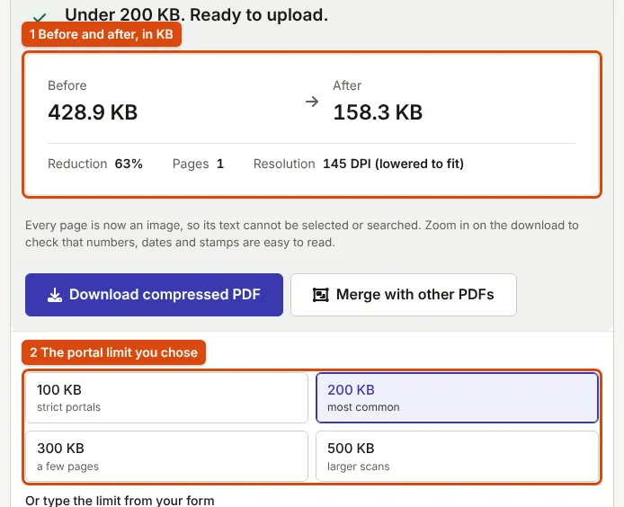

How to Get a Scanned PDF Under a Portal's Size Limit and Keep It Readable
A scanned PDF is a picture of each page. Remove what the form does not need, then reduce the pictures only as far as the limit requires.
Why a scanned PDF is large
A PDF made from a scan or a phone photo holds a picture of each page, not text. An A4 page at 300 DPI is 2480 × 3508 pixels, about 8.7 million pixels; uncompressed, that is about 26 MB in colour. Fitting it into 100 or 300 KB means keeping far fewer pixels, compressing them harder, or both. A certificate is mostly white paper and dark text, which helps: it compresses much better than a photograph.
Job portals and university application forms set their own limits, and they are often ranges: an illustrative portal might ask for each certificate as a PDF of 50 to 300 KB, a resume under 1 or 2 MB, and a combined "supporting documents" file under 500 KB. Read the limit printed next to each upload slot. A resume exported as text from a word processor or the resume builder is usually well under any limit; the large files are almost always scans.
What to change, in order
| Change | Effect on size | Effect on readability |
|---|---|---|
| Remove pages the form does not ask for | Large | None |
| Crop dark borders around the page | Moderate | None |
| Fewer pixels per page | Large | Small for normal print, until small text blurs |
| Lower JPEG quality | Large at first, then small | Fine until letter edges turn fuzzy |
Removing pages and borders costs nothing, so do it first. If you are building the PDF from images, choosing a lower quality setting in image to PDF is the simplest fix: in our test, the same two pages came to 618.4 KB at High, 227.5 KB at Balanced and 136.3 KB at Compact. Use the compressor when you only have the PDF.
What the compressor does
The PDF compressor redraws every page in your browser at the resolution you choose (150 DPI unless you change it) and saves it as a JPEG, at the highest quality that fits that page's share of your limit. Only when the lowest quality is still too large does it lower the resolution, down to 50 DPI, and it tells you when it has. The result has the same number of pages, in the same order and at the same page sizes, and it is opened again and checked before you can download it. The trade-off is that every page becomes a picture, so text can no longer be selected or searched. That suits scans and phone photos, which are pictures already; a PDF exported from a word processor is usually small enough as it is.

In our test, a three-page A4 scan of 431 KB compressed to a 100 KB maximum came out at 97.8 KB, still at 150 DPI. Check the result against your limit and read it at 100% zoom: if the smallest text is not readable, the limit is too tight for that many pages.
Only compress a file that is over the limit. Re-encoding pages that are already compressed loses detail and may not save anything. The compressor therefore keeps your original PDF, unchanged, when it is already under the limit you set or when compressing would not make it smaller, and says so.
When the limit is too small for the pages
- Check whether the form has more than one slot, and split the document across them with Split PDF. Pages the form does not ask for can be removed with Organise PDF pages.
- Rebuild the PDF from the original page images at a lower quality setting, rather than compressing a compressed file again.
- For black-and-white text, a greyscale page compresses better than a colour one: turn on Black and white in the compressor, and keep colour only where a stamp or seal must stay readable.
- If a file falls under a minimum, for example a slot that accepts 50 to 300 KB, rebuild it at a higher quality instead of compressing it.
Building the PDF in the first place is covered in combining documents into one PDF, and page capture in phone document scans.
Frequently asked questions
Will compression change the text?
In a scanned PDF the text is part of the picture, so heavy compression softens the letters. That is why you read the smallest text before uploading.
What is PDF/A?
A version of PDF for long-term archiving (Library of Congress). A few portals ask for PDF/A for supporting documents; most accept any standard PDF. The compressor's output is a standard PDF, not certified PDF/A.
Does the compressor upload my documents?
No. It runs in your browser. Staying safe with document uploads shows how to check that for any tool.
Sources
- Library of Congress: PDF (Portable Document Format) Family
- MDN Web Docs: Image file type and format guide, JPEG compression
- Library of Congress: PDF/A family
Figures on this page were measured with ApplyReady's own tools in a current browser. Found a mistake? Report an error.